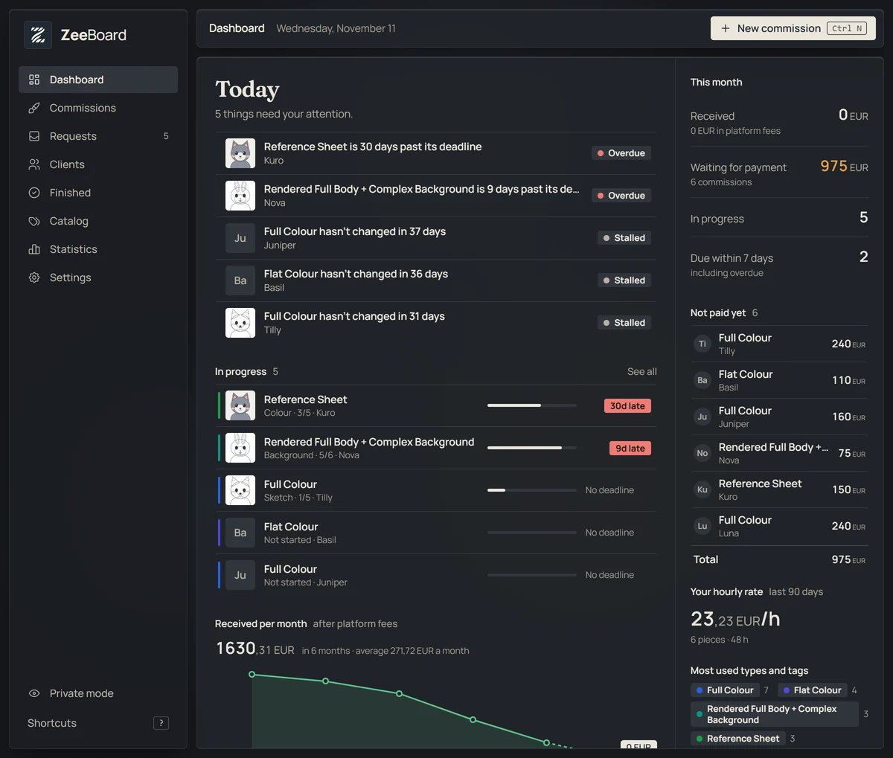
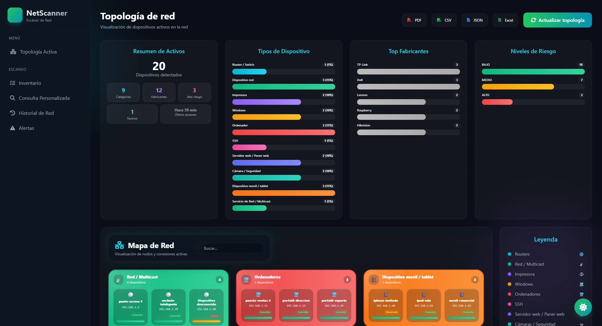
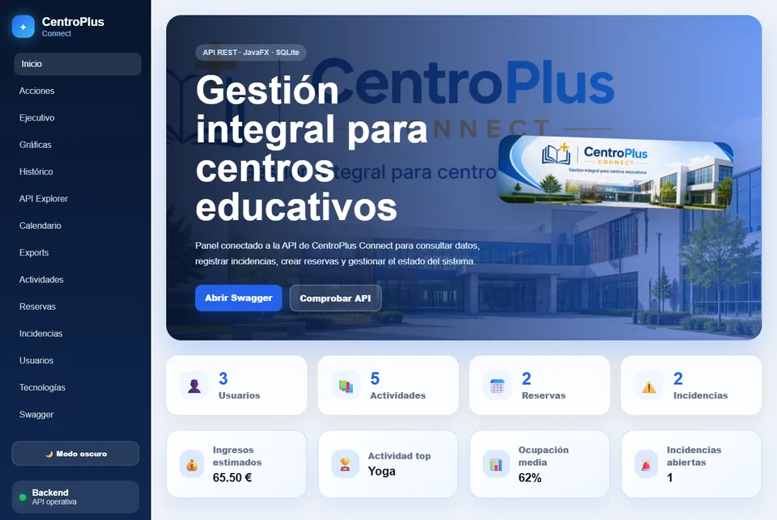

ZeeBoard
Tracks an artist's commissions from start to finish: the client, every stage of the drawing with its images, and what is still unpaid.
TypeScript, React, Tauri and SQLite
I study Multiplatform App Development and build apps with Java and Python, with databases behind them and Flutter in front.
Right now: JPA relationships, sockets in Python and a website with my course notes.
Internship from February 2027I'm hooked on the part nobody sees: where the data lives and how it gets to the screen. This year I went from parsing a CSV by hand to building repositories with JPA.

Tracks an artist's commissions from start to finish: the client, every stage of the drawing with its images, and what is still unpaid.
TypeScript, React, Tauri and SQLite

Maps a local network and flags the devices that look risky. A team project from my first internship.
Python, Django, Scapy and MongoDB

Bookings, activities and incident reports for a school: a website, a JavaFX app and the API behind both.
Java 17, Spring and JavaFX
One commit per step, with a message that explains the change and the reason for it. In my Deployment course the teacher grades the history, so I take care of it from day one.
My READMEs keep every command with the real output it gave, errors included. What I learn in class goes into a notes website anyone can read.
The car workshop project for my Data Access course had 90 JUnit tests, and I didn't hand it in until all of them were green. The JPA library project also counts Checkstyle and PMD.
GitHub Actions builds my Maven projects and publishes the jar. This CV and my notes website deploy themselves every time I push a change.
Java from scratch, HTML, CSS and JavaScript, XML, and databases with PostgreSQL in Docker.
A REST API with Spring Boot and hexagonal architecture, used by a website and a JavaFX app.
We built NetScanner as a team: Python, Django, Scapy to scan the network and MongoDB for the history.
A desktop app for artists who work on commission, with Tauri, React and SQLite.
JDBC and JPA in Java, threads and sockets in Python, Flutter, React with TypeScript, deployment with Docker and nginx, and Odoo.